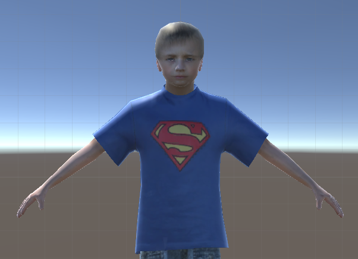
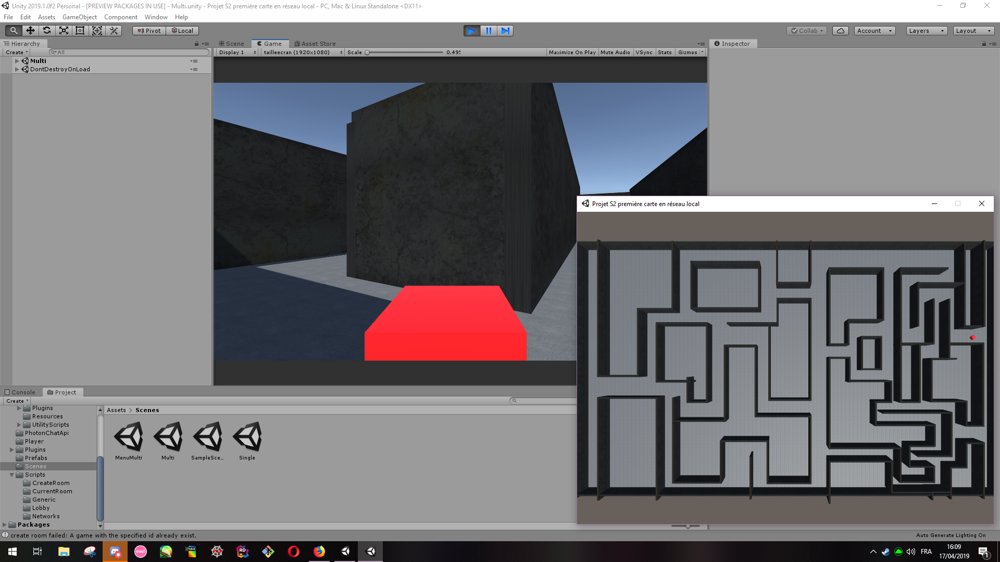

Journal de bord
Équilibrage le retour
Nous avons placé des cachettes sur le niveau 1.
Non Elodine, un jeu trop difficile n'est pas agréable.
|
Relions les niveaux
Création d'escalier reliant les différents niveaux entre eux,
l'interface est tôtalement relier aux niveaux, le joueur peut quitter le jeu au cours
d'une partie...Bref notre jeu ressemble enfin à un vrai jeu.

|
Update du niveau 1
Le premier niveau est graphiquement prêt. Les musiques ont été rajouté
dans le jeu.
|
Graphismes
Les ennemis ont enfin un modèle 3D animé. Attention à l'arrivée des hommes
en noir!

|
Changement de programme
Pour rééquilibrer notre jeu multijoueur nous avons finalement choisis de faire des ennemis avançant en permanance
et tournant à droite dès qu'elles sont bloqués. En effet, le maître du jeu pouvait concentrer toutes les IAs à l'entrée de l'autre joueur dans le niveau.
Nous avons donc eu pitié du joueur s'infiltrant.
|
Graphismes
Notre jeu commence à perdre son côté cubique! Superman junior se déplace
sur la carte.
|
Musique!
La musique d'ambiance des niveaux est prête!
|
Superman junior est là
Notre personnage prend forme. Il semble un peu coincé mais l'animation du déplacement est là.

|
Deuxième soutenance
Nous avons échappé de peu à la catastrophe, le wi-fi ne passant pas impossible de montrer notre multijoueur. Heureusement, grâce à un
partage de connexion salvateur, nous avons pu le montrer... à deux minutes de la fin. Ouf!
Maintenant, les graphismes!
|
Niveaux!!!
Tout les niveaux sont créés! Il ne reste plus qu'à leur ajouté des graphismes et des ennemis!
|
Deuxième niveaux
Le deuxième niveau du mode solo possède son système de fermeture des chemins. Il ne manque plus que les ennemis.
Le niveau 2 du multijoueur est prêt!
|
Les ennemis du multijoueur sont là!
Le joueur contrôlant les ennemis les peut faire apparaître! Mais il a fallut modifier le script de détection pour l'adapter à ce mode...
Prochaine étape les trajectoires de ces ennemis.
|
Zoom, zoomons
Une caméra c'est bien, qu'elle puisse zoomer c'est mieux. La caméra est officiellement fini!
|
On peut jouer à deux!!!
On y est le multijoueur est opérationnel deux joueurs
peuvent se connecter en même temps!
Prochaine étape les ennemis.

|
Niveau un complet
Les IAs bougent, elles repèrent le joueur, les chemins sont bloqués
lorsque le joueur se fait voir dedans, la caméra marche et le joueur ne traverse plus les murs.
Enfin le premier niveau est jouable et fini! On a même rajouté quelques cachettes pour qu'il
soit réalisable.
|
Objectif taupe
Nos IAs détectent le joueur, bon leur vision se rapproche de
celle d'une taupe mais ce n'est qu'une question de calibrage.
|
Gameplay
Ca y est, notre jeu prend vraiment forme!
Lorsque le joueur se fait voir, le chemin qu'il a pris se bloque.
Les IAs ne voient pas encore le joueur mais le système est en place.
|
|

{kind=link}
{kind=link}